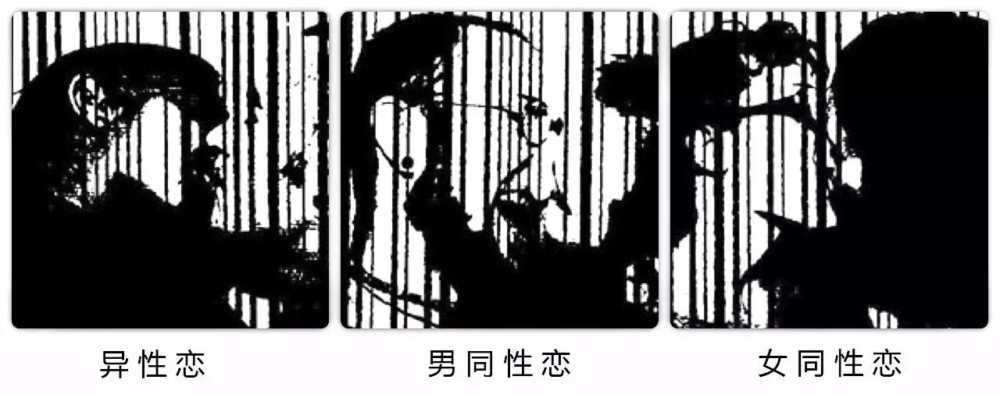

同声传译 | Queer By Choice?

QUEER\ KWIER:
adj.:1.differing from the usual or
normal: PECULIAR, STRANGE
2.HOMOSEXUAL,
BISEXUAL,TRANSGENDERED,
HETEROSEXUAL, or any
combination of predetermined
sexualities 3. COUNTERFEIT
vb.:DISRUPT
n: one that is queer.

在一个二元的文化中，我发现要表达出一个令我舒服的身份状态正变成一件越来越难的事情。从出生的那一刻起，我们就被这样的文化强制定义自己，使我们符合现有的规范：是男人或者女人、是异性恋或同性恋、是生产者或消费者等等。所有的这些分类都否认了每个人的个人经历和这带给他们的各种变化。事实上，我们的生活每时每刻都在发生变化。同样的东西现在对它的定义和其他时代的含义可能完全不同。
这些观念中最具代表性的是异性/同性二元分立和它对我们的生活产生的影响。我不符合异性恋这一分类的要求，于是社会和我自己就啪的一下就把我分到了同性恋的分类下。我被告知为了争取性少数的权力，我要告诉人们我的性取向是在生理上确定的，换句话说就是“生来如此”。可是我不想这么说。这么说就好像在告诉别人我生来就有这样一个不想要的烦恼，同时也预设着成为异性恋者是非常有必要，甚至是令人渴望的。
和大多数人所相信的不同，性取向不是一个与生俱来的取向，而是一种生理在某些程度上起着重要决定作用的偏好。我也说过我很困扰。如果我承认成为性少数是一种社会的构建，那么我就要否认我的身体和生物作用。但是如果我承认生物作用的话，我的性取向就被以一个很决定论的角度来定义了。我不会让这种事情发生的。如果人们可以选择自己的性取向，难道为了性少数权利而斗争就变得不够合理了吗？

我们不会去想“选择成为异性恋”是什么意思。没有人会去证明成为直人是正当的或者为它是天生的还是选择的来辩论。如果这个社会不是这么异性恋霸权的话，没有人会在意为什么别人是性少数。我们也不用拼了老命只为了符合那些预设的分类。
为了更好地理解性少数，人们需要意识到他们不是异性恋的可能性，但也不一定就是同性恋，而是这两种状态复杂的结合体。
我不想要任何人去接受或者容忍性少数。接受和容忍使成为性少数变成了一个“问题”，一个需要被接受或容忍的问题。在这样一个憎恨性少数并无视变化性的社会中，恐同根本不需要任何勇气。
最后，我被黑暗淹没，寻找着真相。我没有答案，只有疑问和用反抗的措辞定义我自己。在一个异性恋霸权并恐同的社会中，有没有可能拥有一个积极准确的性少数身份呢？这样做是否只是尝试去归顺于无法被接受的社会理想？解构异性恋这一概念是否比基于作为他者而构建新的身份更为重要？是否的确存在酷儿身份的这样一个东西呢？ /
翻译 | 文文
校对 | 肯
编辑 | 文文
这一次点击“阅读原文”真的可以阅读原文了

*推荐阅读*
（点击文字直接查看）